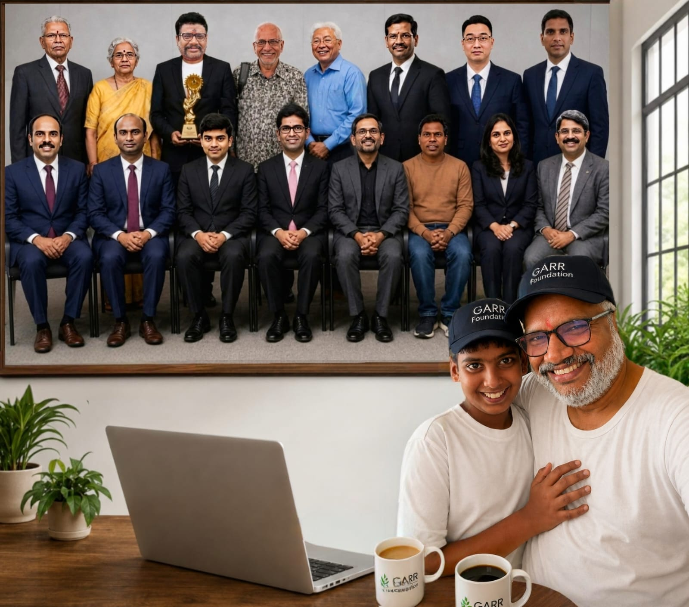

GopalKrishna Advanced Rural Research Foundation
Knowledge • Innovation • Impact
Knowledge • Innovation • Impact
GARRF is an education and research-oriented foundation working to encourage scientific thinking, research, innovation and meaningful opportunities for students, young researchers and educators.
GARRF was started by the father-and-son duo Dr. Annamdas Venu Gopal Madhav and Annamdas Shantanu Vasudev Krishna, with the support and blessings of their family. The Foundation brings together academic experience, research, technology, student mentoring and a strong belief in creating meaningful opportunities for the next generation.
Shantanu Vasudev Krishna is one of India's youngest CEOs, a Young Economic Times Entrepreneur student and a student of Birla Open Minds International School. His involvement reflects GARRF's commitment to encouraging young minds to explore entrepreneurship, technology, research, innovation and responsible leadership.
Dr. Annamdas Venu Gopal Madhav brings academic, research and professional experience developed across India, Singapore and the USA. He has extensive experience guiding undergraduate and graduate students, developing engineering projects and supporting research-oriented learning.
His experience includes work and project guidance in areas such as Artificial Intelligence, Robotics, Structural Health Monitoring, Smart Materials, Piezoelectric Systems, Android Applications, Arduino and Embedded Systems, together with broader engineering and research applications.
Through GARRF, he seeks to help genuine and motivated students develop stronger research capability, practical project experience and scientific thinking, while also creating opportunities for collaboration with faculty, universities and industry.
GARRF draws upon academic and professional experience developed through institutions and research environments in India, Singapore and the United States. These experiences contribute to the Foundation's approach to student mentoring, research and project development.

Singapore — doctoral and international academic research experience.

Academic, research and professional experience across international institutions.

Indian academic foundation and postgraduate education associated with IISc Bengaluru.
GARRF provides education, training and research-oriented project opportunities for undergraduate and graduate students. Our objective is to help motivated students develop practical skills, stronger project capability and scientific thinking through carefully structured training and meaningful project work.
Dr. Annamdas brings extensive experience in guiding undergraduate and graduate students, particularly from his academic and professional years in Singapore. He has worked with hundreds of students and encourages them to move beyond routine academic requirements towards technically stronger projects, scientific thinking, research skills and practical problem solving.
His mentoring approach combines international academic exposure, engineering experience and project-management practice. Students are encouraged to undertake genuine projects, build demonstrable technical capability and develop the confidence required for higher studies, research and industry opportunities.
Where Dr. Annamdas has directly mentored a student and has sufficient knowledge of the student's work, he may provide a genuine referral or recommendation letter based on the student's demonstrated abilities, project contribution and conduct. Such letters may support applications for overseas education, research opportunities or industry positions; final admission and recruitment decisions remain with the receiving university, institute or employer.
Students who undertake meaningful work are encouraged to document their achievements professionally and build a credible LinkedIn profile. Genuine professional endorsements and recommendations should arise from actual project work, mentoring and collaboration.
GARRF aims not only to develop students but also to encourage them to use engineering, science and AI to address practical challenges in rural India. Students who join suitable projects can contribute their skills towards meaningful community and rural-development outcomes.
Build your skills. Work on genuine projects. Create evidence of what you can do. Watch for GARRF project announcements and apply early when suitable opportunities become available.
Training and mentoring for undergraduate engineering students who want to strengthen their technical knowledge, project skills, research thinking and practical capabilities.
Specialised guidance for graduate students undertaking advanced technical projects, research-oriented assignments and interdisciplinary work.
Specialised AI training and internship programmes can be curated around the student's project requirements, engineering discipline and learning objectives.
GARRF provides guidance for meaningful final-year engineering projects designed around genuine technical problems rather than routine project completion.
Students may undertake curated projects aligned with their academic background and interests. Project scope, training and fees are determined through agreement with the respective university or institute.
GARRF can provide research-oriented technical guidance to PhD scholars in coordination with their university supervisors and according to institutional requirements.
Training opportunities extend beyond engineering to selected management and project-management learning activities.
Depending on project requirements, students may be introduced to modern technology and application-development tools, including MIT-related educational platforms where appropriate.
GARRF currently places strong emphasis on online training, enabling students and mentors to collaborate across universities and locations.
The Foundation also draws upon Dr. Annamdas's practical experience across engineering, intelligent systems, instrumentation and student project development. These areas can be considered for specialised training, internships, final-year projects and collaborative research, depending on the student's discipline and institutional requirements.
GARRF can explore joint projects with universities and institutes. Faculty members may participate as co-investigators with Dr. Annamdas on suitable research proposals and competitive grant applications to Indian central and state government agencies, subject to the eligibility rules, scheme requirements and approvals of the respective institutions.
The Foundation also aims to help create meaningful industry partnerships for universities, connecting academic teams with practical engineering problems, industry-oriented projects, technology development and potential collaborative opportunities. The objective is to build a bridge between students, faculty, universities, industry and research funding.
GARRF expects to announce project opportunities, training programmes, internships and university engagement activities periodically.
For research and project enquiries:
founder@garrf.in
For help desk and vacancy enquiries:
help_desk@garrf.in
Explore research-oriented white papers, technical perspectives and knowledge resources developed to encourage scientific discussion, innovation and practical solutions.
Explore GARRF White PapersGARRF is supported by advisors and professionals with academic, scientific and industry experience from India and abroad.
Meet the Committee